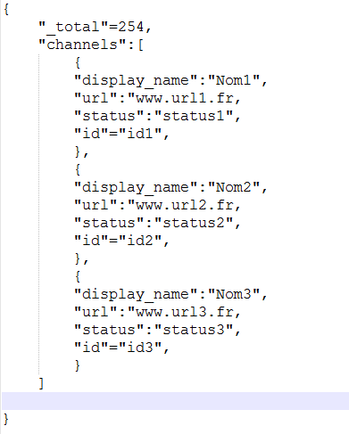

🧠Qu'est-ce qu'une API? 🤔
A- Application
P- Programming
I- Interface
🇫🇷: Interface de programmation d'applications
Une API est un service externe, la plupart du temps c'est une fonction ou une base de données. Elle facilite l’interaction entre deux applications différentes afin qu’elles puissent communiquer entre elles : elle sert d’INTERMÉDIAIRE.

Pour mieux comprendre imagine que tu es au restaurant 🍽️
L'API c'est le serveur! Tu commandes puis il te ramène un plat 🍝
Entre les deux tu ne sais pas ce qu'il se passe 🙈
-> On effectue une REQUÊTE, on obtient une RÉPONSE!
Les API sont partout


Sur le web on utilise des API REST (requête HTTP).
La réponse renvoyée par l'API REST:
Fichier XML 😵‍💫

Fichier JSON 🥰
Pourquoi utiliser des API?
👉 Se simplifier la vie
👉 Ajouter des fonctionnalités à son site web
👉 Créer ses propres API et les monétiser
Un exemple:
Démo
Exemple de doc:
Construction de la requête:
"http://musicbrainz.org/ws/2/recording?query=recording :paradise%20and%20artist:coldplay&limit=5&fmt=json";